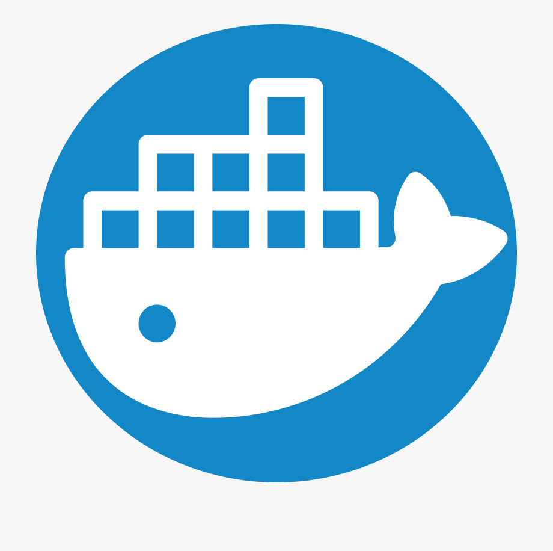
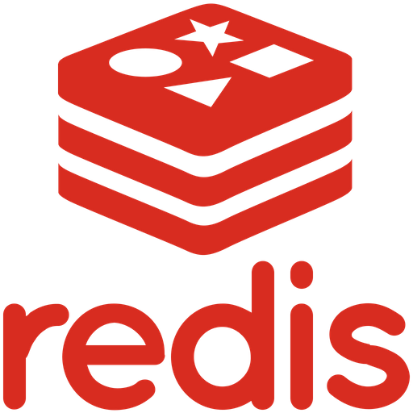

Ключевые навыки
- Ruby

- Bash & linux

- Разработка через тесты

- Функциональное программирование

- Lisp

- Git

- PostgreSQL

- Docker
- Nomad

- Redis
- Kafka

- MySQL

Обо мне
Увлекся разработкой на первых курсах университета. Прошел курсы на Хекслете (backend Javascript), после этого устроился на работу Ruby-разработчиком в компанию Bookmate. Знаю UNIX-системы, люблю и умею писать на самом новом Ruby, JS и лиспах. Способен быстро освоить новый инструмент или библиотеку. Пишу тесты к своему коду и всегда покрываю его статическим анализом:). Умею работать с гитом, отличаю merge от rebase и способен заглянуть в 'reflog'.
Хочу найти работу, которая позволит расти лично и профессионально. Рассматриваю удаленные варианты.
Опыт работы
-
Bookmate - Ruby backend developer
Разрабатывал новый API и поддерживал старый. Разрабатывал интеграции с сторонними API платежных систем. Писал микросервисы, вел разработку через Github, писал тесты и делал код-ревью.
Образование
- НИТУ "МИСиС" - бакалавр бизнес-информатики 2013-2017
- НИТУ "МИСиС" - магистр бизнес-информатики 2017-2019
Опыт работы
- Лаборатория Свободных Решений - сотрудник первой линии поддержки на проекте внедрения АИС МФЦ
- АО "Галактика-ПРО" - младший консультант (3-х месячная стажировка)
Пройденная техническая литература
- Структура и интерпретация компьютерных программ - Абельсон и Сассман (2 главы)
- Грокаем алгоритмы - Адитья Бхаргава
- Design Data-Intensive Applications by Martin Klepmann
- How LINUX works by Brian Ward
- Pragmatic Programmer by by Andy Hunt and Dave Thomas
- Операционные системы UNIX - Андрей Робачевский
- Различные онлайн-курсы
Другие навыки и увлечения
- Английский язык - IELTS 8.0
- Презентационные навыки
- Любительская игра на гитаре
- Баскетбол